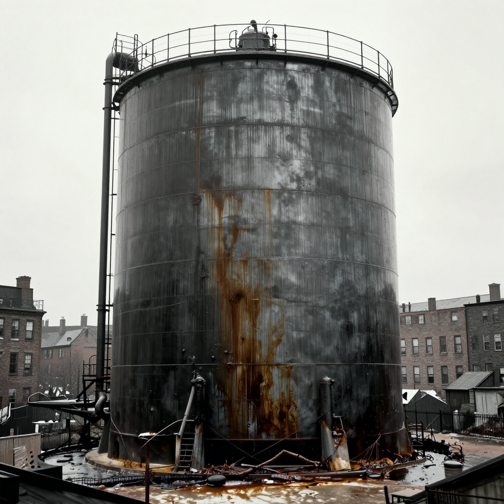
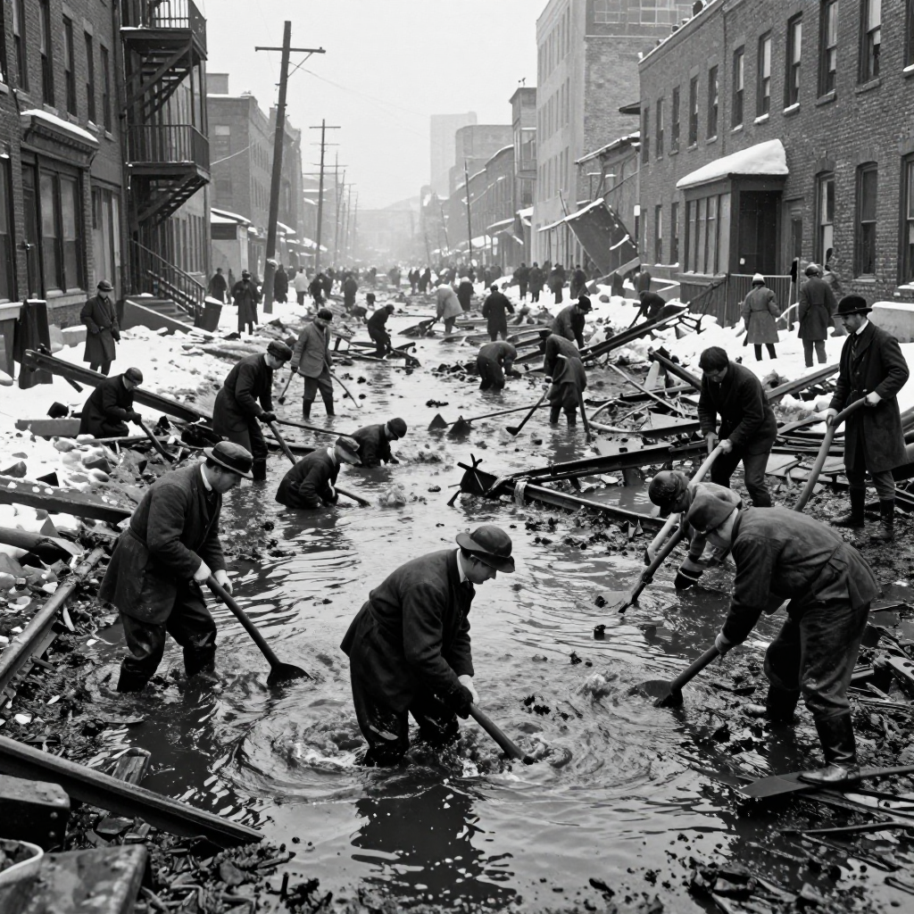

The Great Molasses Flood

The aftermath of the Great Molasses Flood - a deadly wave of sticky sweetness!
On January 15, 1919, something bizarre happened in Boston's North End neighborhood. A massive tank containing 2.3 million gallons of molasses burst open, sending a deadly wave of sticky syrup through the streets at 35 miles per hour!
This strange disaster killed 21 people, injured 150 more, and destroyed buildings, trains, and a fire station. But here's the mystery: how could molasses - a thick, slow-moving syrup - move fast enough to cause so much destruction?
A Sweet but Deadly Day
It was an unusually warm winter day in Boston - about 40°F (4°C). The Purity Distilling Company had a massive steel tank, 50 feet tall and 90 feet wide, filled to the brim with molasses. They used it to make rum and industrial alcohol.
Around 12:30 PM, people in the neighborhood heard a sound like machine gun fire. Then the tank exploded!
🌊 The Wave
The molasses wave was initially 25 feet tall and moved at 35 mph - faster than anyone could run!
The Destruction

The molasses destroyed everything in its path - buildings, trains, and lives.
The wave of molasses smashed houses, knocked a fire station off its foundation, and swept away a train on the nearby tracks. People and horses were trapped in the sticky mess, unable to move.
The disaster happened so fast that many victims never had a chance to escape. Some were crushed by debris, others drowned in the thick syrup. It was a horrific scene that seemed impossible - how could something as innocent as molasses become so deadly?
🐴 The Horses
Rescuers had to shoot horses trapped in the molasses because they couldn't pull them free from the sticky syrup.
The Science of Sticky

Cleanup took weeks - workers used salt water to wash away the molasses!
Here's where science explains the mystery. Molasses is a "non-Newtonian fluid" - its thickness changes based on temperature and pressure. When cold, it's extremely thick. When warm, it flows more easily.
On that January day, the warm weather had heated the molasses, making it thinner. When the tank burst, the pressure pushed the molasses forward in a massive wave. But as it spread out and cooled, it quickly became thick and sticky again - trapping everything in its path!
Why Did the Tank Explode?
Investigations revealed that the tank was poorly constructed. The walls were too thin for the amount of molasses inside. Even worse, the company had never properly tested it!
- Thin steel: The tank walls were only half as thick as they should have been
- No inspection: The tank had never been properly tested for leaks
- Fermentation: Some scientists believe the molasses was fermenting, creating gas pressure inside
- Temperature change: The warm day after a cold snap may have stressed the metal
⚖️ Justice Served
The company was found responsible and had to pay the equivalent of $15 million in today's money to victims' families!
A Lasting Legacy
Today, the North End neighborhood has a small plaque marking the disaster. Locals say that on hot summer days, you can still smell molasses in the area - though scientists say this is probably just a legend!
The Great Molasses Flood remains one of history's strangest disasters - a reminder that even something sweet can be dangerous when safety is ignored!
Clear Summary of the Evidence
The Great Molasses Flood can sound dramatic, but the best way to understand it is to separate strong evidence from speculation. This article focuses on documented facts, source quality, and clear historical context.
In simple terms, this topic matters because it connects three ideas: what happened, how we know, and what remains uncertain. The core story in The Great Molasses Flood is easier to follow when we use a timeline, define key terms, and point directly to sources.
On January 15, 1919, something bizarre happened in Boston's North End neighborhood. A massive tank containing 2.3 million gallons of molasses burst open, sending a deadly wave of sticky syrup through the streets at 35 miles per hour!
Background Timeline (What Happened, Step by Step)
- On January 15, 1919, something bizarre happened in Boston's North End neighborhood.
- Experts continue revisiting The Great Molasses Flood as better tools and stronger source checks become available.
- Experts continue revisiting The Great Molasses Flood as better tools and stronger source checks become available.
- Experts continue revisiting The Great Molasses Flood as better tools and stronger source checks become available.
- Experts continue revisiting The Great Molasses Flood as better tools and stronger source checks become available.
This timeline view clarifies the sequence of events and helps test whether later claims fit documented records.
What We Know with Strong Support
Across discussions of The Great Molasses Flood, several points are consistently supported by records or repeatable analysis:
- On January 15, 1919, something bizarre happened in Boston's North End neighborhood.
- A massive tank containing 2.3 million gallons of molasses burst open, sending a deadly wave of sticky syrup through the streets at 35 miles per hour!
- This strange disaster killed 21 people, injured 150 more, and destroyed buildings, trains, and a fire station.
- But here's the mystery: how could molasses - a thick, slow-moving syrup - move fast enough to cause so much destruction?
These claims are stronger because they can be checked independently, rather than depending on one dramatic story or one unverified source.
How Researchers Study This Topic
Good history is a method, not just a story. When experts examine The Great Molasses Flood, they usually combine source criticism, technical analysis, and contextual comparison.
- Historians compare primary records, later retellings, and modern scholarship to reduce errors from repetition.
- A strong interpretation separates what documents clearly show from what is inferred later by commentators.
- Context is essential: social, political, and economic conditions often explain why events looked mysterious at the time.
Strong analysis starts by checking whether a claim is supported by verifiable evidence and independent review.
What Experts Still Debate
Even with good evidence, not every question has a final answer. In The Great Molasses Flood, debates often continue because the surviving data is incomplete, damaged, or interpreted in different ways.
One common source of confusion is mixing the topics of A Sweet but Deadly Day, The Destruction, and The Science of Sticky as if they prove the same thing. In reality, each part of the story may require different standards of proof.
A balanced approach is to keep uncertainty visible: we can confidently state what records show today, while leaving room for future evidence to update the picture.
Myths vs. Evidence
Myth: If a topic is mysterious, experts have no idea what happened.
Evidence-based view: Usually, experts know many parts of the story; the debate is about specific details.
Myth: The most dramatic explanation is probably true.
Evidence-based view: The best explanation is the one that matches the most verifiable facts with the fewest assumptions.
Myth: New claims automatically replace old research.
Evidence-based view: New claims become accepted only after careful checks, replication, and critical review.
Why This Story Still Matters Today
The Great Molasses Flood is not only a curiosity from the past. It also provides a well-documented case for comparing primary records, later interpretations, and unresolved evidence questions.
This matters because careful source-checking reduces misinformation and keeps historical interpretation anchored to evidence.
Mini Glossary (Plain Language)
- Primary source: A record made close to the event, like a report, letter, inscription, or official document.
- Secondary source: A later explanation that interprets primary evidence.
- Hypothesis: A proposed explanation that must be tested against evidence.
- Consensus: The view most experts currently support, knowing it can change with new data.
- Archival record: Stored historical documents such as court files, newspapers, and official correspondence.
- Historical bias: A systematic slant in records due to who wrote them and why.
Quick Recap
If you remember only three things about The Great Molasses Flood, keep these: (1) there is real evidence worth studying, (2) some questions remain open, and (3) careful source-checking is the best path to reliable understanding.
That balance of curiosity and caution helps separate durable historical findings from speculation.
Extended Context for Deeper Reading
When we revisit The Great Molasses Flood with patience, the most useful progress comes from careful comparison: early reports versus later analysis, confident claims versus documented limits, and popular retellings versus primary evidence. This method yields a clearer map of established findings and unresolved questions.
References & Further Reading
Editorial note: We cross-check claims across multiple independent sources. See our Editorial Policy.